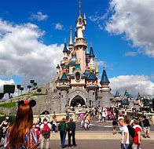

Disneyland
Introduction :
Disneyland Paris, situé à Marne-la-Vallée à environ 32 km de Paris, est l'une des destinations touristiques les plus populaires d'Europe. La distance entre Disneyland Paris et Tournai est d'environ 230 kilomètres. En voiture, cela prend généralement environ 2 heures et 30 minutes, selon les conditions de circulation. Ouvert en 1992, ce parc à thème magique propose une expérience immersive dans l'univers des films Disney, avec des attractions, des spectacles et des rencontres avec des personnages emblématiques, dont le célèbre Stitch.
Que faire à Disneyland Paris ?
1. Parc Disneyland :
- Sleeping Beauty Castle : Le château emblématique de la Belle au Bois Dormant, parfait pour des photos souvenirs.
- Pirates of the Caribbean : Une attraction immersive dans l'univers des pirates.
- Space Mountain: Mission 2 : Un roller coaster palpitant dans l'espace.
- It's a Small World : Une croisière enchantée à travers les cultures du monde.
2. Parc Walt Disney Studios :
- Ratatouille: The Adventure : Une attraction 4D inspirée du film Ratatouille.
- Tower of Terror : Une chute libre effrayante dans un hôtel hanté.
- Crush's Coaster : Un roller coaster inspiré du film Le Monde de Nemo.
3. Spectacles et parades :
- Disney Illuminations : Un spectacle nocturne de feux d'artifice et de projections sur le château.
- Disney Stars on Parade : Une parade colorée avec tous vos personnages Disney préférés.
4. Rencontrez Stitch :
- Stitch Live! : Une attraction interactive où vous pouvez rencontrer Stitch en personne. Il interagit avec le public en temps réel grâce à une technologie innovante.
- Points de rencontre : Stitch apparaît également lors de certaines parades et événements spéciaux. Consultez le programme du jour pour savoir où et quand le rencontrer.
- Boutiques : Ne manquez pas les boutiques pour acheter des souvenirs à l'effigie de Stitch, comme des peluches, des t-shirts et des accessoires.
Conseils pratiques :
1. Billets et réservations :
- Achetez vos billets en ligne à l'avance pour éviter les files d'attente.
- Optez pour un billet multi-jours si vous souhaitez explorer les deux parcs.
2. Meilleure période pour visiter :
- Évitez les vacances scolaires et les week-ends pour des foules moins importantes.
- Printemps et automne sont des périodes idéales pour un temps agréable.
3. Sur place :
- Arrivez tôt pour profiter des attractions populaires sans trop attendre.
- Utilisez l'application Disneyland Paris pour vérifier les temps d'attente et planifier votre journée.
- Prévoyez des vêtements confortables et des chaussures adaptées à la marche.
4. Hébergement :
- Les hôtels Disney offrent des avantages comme un accès early entry au parc.
- Des options moins chères sont disponibles à proximité du parc.
À ne pas manquer pour les fans de Stitch :
- Assistez à Stitch Live! pour une expérience interactive unique.
- Prenez des photos avec Stitch lors des points de rencontre.
- Rendez-vous dans les boutiques pour ramener des souvenirs exclusifs de Stitch.
- Gardez un œil sur le programme des événements spéciaux, car Stitch peut apparaître lors de certaines célébrations.
Santorini
Introduction :
Santorini, une île grecque emblématique de la mer Égée, est une destination de rêve pour les couples. Avec ses villages blancs perchés sur des falaises, ses couchers de soleil spectaculaires et ses plages uniques, Santorin offre une escapade romantique inoubliable. Depuis la Belgique, l'île est facilement accessible en avion avec une escale à Athènes ou directement en haute saison.
Que faire à Santorin ?
1. Explorer les villages emblématiques :
- Oia : Le village le plus célèbre de Santorin, connu pour ses ruelles pittoresques et ses couchers de soleil à couper le souffle. Parfait pour une promenade romantique.
- Fira : La capitale animée de l'île, avec ses boutiques, ses restaurants et une vue imprenable sur la caldeira.
- Imerovigli : Un village plus calme, idéal pour les couples cherchant la tranquillité et des vues spectaculaires.
2. Profiter des plages uniques :
- Plage de Perissa : Une plage de sable noir volcanique, parfaite pour se détendre.
- Plage de Red Beach : Connue pour ses falaises rouges spectaculaires, c'est un endroit idéal pour des photos romantiques.
- Plage de Kamari : Une plage animée avec des restaurants en bord de mer et des activités nautiques.
3. Vivre des expériences romantiques :
- Coucher de soleil à Oia : Un moment magique à ne pas manquer, surtout depuis le château d'Oia.
- Cruise en bateau : Profitez d'une croisière autour de la caldeira avec un dîner romantique au coucher du soleil.
- Dégustation de vins : Santorin est réputée pour ses vignobles. Visitez une cave locale pour une dégustation de vins en couple.
4. Découvrir la culture et l'histoire :
- Site archéologique d'Akrotiri : Une ancienne ville minoenne ensevelie sous les cendres volcaniques.
- Musée préhistorique de Thira : Pour en apprendre davantage sur l'histoire fascinante de l'île.
Conseils pratiques :
1. Depuis la Belgique :
- Vols directs vers Santorin sont disponibles en haute saison (avril à octobre) depuis Bruxelles. Sinon, prenez un vol avec escale à Athènes.
- Réservez vos billets à l'avance pour obtenir les meilleurs tarifs.
2. Meilleure période pour visiter :
- Mai à septembre est la meilleure période pour profiter du beau temps et des activités en plein air.
- Évitez juillet et août si vous préférez éviter les foules.
3. Hébergement :
- Optez pour un hôtel avec vue sur la caldeira pour une expérience romantique inoubliable.
- Les suites avec piscine privée sont très populaires parmi les couples.
4. Sur place :
- Louez une voiture pour explorer l'île à votre rythme.
- Prévoyez des vêtements légers pour la journée et une veste légère pour les soirées fraîches.
À ne pas manquer pour les couples :
- Dînez dans un restaurant romantique avec vue sur la caldeira.
- Offrez-vous une séance photo professionnelle dans les ruelles d'Oia.
- Profitez d'un spa en couple dans l'un des nombreux hôtels de luxe de l'île.
Italy
Introduction :
Florence, berceau de la Renaissance, est une ville italienne riche en histoire, en art et en culture catholique. En plus de Florence, l'Italie abrite de nombreux sites religieux importants, comme le Vatican à Rome et la Basilique Saint-François à Assise. Ce guide vous propose de découvrir les trésors de Florence ainsi que d'autres lieux emblématiques de la culture catholique en Italie.
Que faire à Florence ?
1. Découvrir les monuments religieux :
- Cathédrale Santa Maria del Fiore (Duomo) : Le symbole de Florence, avec son dôme emblématique conçu par Brunelleschi. Montez au sommet pour une vue panoramique sur la ville.
- Basilique Santa Croce : Une église gothique abritant les tombes de grands noms comme Michel-Ange et Galilée.
- Basilique San Lorenzo : L'une des plus anciennes églises de Florence, avec des chapelles conçues par Michel-Ange.
2. Explorer les musées et l'art religieux :
- Galerie des Offices : Découvrez des chefs-d'œuvre religieux de Botticelli, Léonard de Vinci et Michel-Ange.
- Musée de l'Œuvre du Duomo : Consacré à l'art religieux, il abrite des sculptures et des artefacts de la cathédrale.
3. Profiter des expériences spirituelles :
- Assister à une messe : Participez à une messe dans l'une des églises historiques de Florence pour une expérience spirituelle authentique.
- Visiter les cloîtres : Explorez les cloîtres paisibles de la Basilique Santa Maria Novella ou de la Basilique San Miniato al Monte.
4. Découvrir les environs de Florence :
- Fiesole : Une petite ville proche de Florence avec des ruines romaines et une vue imprenable sur la vallée.
- San Gimignano : Un village médiéval célèbre pour ses tours et son ambiance historique.
Autres lieux de culture catholique en Italie :
1. Rome :
- Vatican : Visitez la Basilique Saint-Pierre, la Chapelle Sixtine et les Musées du Vatican pour une immersion dans l'histoire catholique.
- Basilique Saint-Paul-hors-les-Murs : L'une des quatre basiliques majeures de Rome.
2. Assise :
- Basilique Saint-François : Un lieu de pèlerinage important dédié à Saint François d'Assise, avec des fresques de Giotto.
3. Padoue :
- Basilique Saint-Antoine : Un sanctuaire dédié à Saint Antoine de Padoue, très vénéré par les catholiques.
4. Sienne :
- Cathédrale de Sienne : Une église gothique impressionnante avec des œuvres d'art religieux de premier plan.
Conseils pratiques :
1. Transport :
- Florence est facilement accessible en train depuis les grandes villes italiennes comme Rome, Milan et Venise.
- Pour visiter les autres sites religieux, louez une voiture ou utilisez les trains régionaux.
2. Meilleure période pour visiter :
- Le printemps (avril à juin) et l'automne (septembre à octobre) sont les meilleures périodes pour éviter les foules et profiter d'un temps agréable.
3. Hébergement :
- À Florence, choisissez un hôtel près du centre historique pour être proche des sites religieux et culturels.
- Dans les autres villes, optez pour des hébergements proches des basiliques ou des lieux de pèlerinage.
4. Sur place :
- Portez des vêtements appropriés pour visiter les églises (épaules couvertes et jambes couvertes).
- Réservez vos billets pour les sites populaires à l'avance, surtout pour le Vatican et la Chapelle Sixtine.
À ne pas manquer :
- Participez à une visite guidée des sites religieux pour en apprendre davantage sur leur histoire et leur signification.
- Goûtez à la cuisine italienne traditionnelle dans les trattorias locales.
- Assistez à une messe papale si vous visitez le Vatican.
Hawaii
Introduction :
Hawaï, un archipel paradisiaque dans l'océan Pacifique, est une destination de rêve pour les amoureux de la nature, des plages et des aventures. En plus de ses paysages époustouflants, Hawaï est également lié à Stitch , le célèbre personnage de Disney originaire de l'espace mais adopté par la culture hawaïenne. Ce guide vous propose de découvrir les meilleures plages de Hawaï ainsi que des expériences uniques autour de Stitch.
Que faire à Hawaï ?
1. Rencontrez Stitch :
- Aulani, un Disney Resort & Spa : Situé sur l'île d'Oahu, ce complexe hôtelier Disney propose des expériences magiques avec Stitch. Participez à des activités interactives, des spectacles et des rencontres avec le personnage.
- Stitch's Aloha Breakfast : Profitez d'un petit-déjeuner en compagnie de Stitch et d'autres personnages Disney à l'Aulani Resort.
- Boutiques Disney : Trouvez des souvenirs exclusifs de Stitch, comme des peluches, des vêtements et des accessoires, dans les boutiques de l'Aulani Resort.
2. Découvrez les plages emblématiques :
- Waikiki Beach (Oahu) : Une plage célèbre pour ses vagues douces, idéale pour le surf débutant et les bains de soleil.
- Kaanapali Beach (Maui) : Une plage de sable doré avec des eaux cristallines, parfaite pour la plongée avec tuba.
- Poipu Beach (Kauai) : Connue pour ses paysages spectaculaires et ses tortues marines.
- Hapuna Beach (Big Island) : L'une des plus grandes plages de sable blanc d'Hawaï, idéale pour la baignade et le surf.
3. Activités nautiques et aventures :
- Surf : Prenez des cours de surf à Waikiki ou sur les plages de North Shore.
- Plongée avec tuba : Explorez les récifs coralliens et la vie marine à Hanauma Bay (Oahu) ou Molokini (Maui).
- Excursions en bateau : Partez en croisière pour observer les baleines (en hiver) ou profiter d'un coucher de soleil romantique.
4. Explorez la culture hawaïenne :
- Luau : Assistez à un festin traditionnel hawaïen avec des danses, de la musique et des plats locaux.
- Visitez un volcan : Découvrez le parc national des volcans d'Hawaï sur Big Island pour voir des coulées de lave actives.
- Marchés locaux : Explorez les marchés pour acheter des produits artisanaux et des souvenirs uniques.
Conseils pratiques :
1. Transport :
- Louez une voiture pour explorer les différentes îles à votre rythme.
- Des vols inter-îles sont disponibles pour passer d'une île à l'autre facilement.
2. Meilleure période pour visiter :
- Avril à octobre est la meilleure période pour profiter du beau temps et des activités en plein air.
- Évitez décembre et janvier si vous préférez éviter les foules et les prix élevés.
3. Hébergement :
- Optez pour un hôtel en bord de plage pour un accès facile aux activités nautiques.
- L'Aulani Resort est un excellent choix pour les fans de Disney et de Stitch.
4. Sur place :
- Apportez de la crème solaire, un chapeau et des vêtements légers pour vous protéger du soleil.
- Respectez l'environnement en évitant de toucher les coraux ou de déranger la faune marine.
À ne pas manquer pour les fans de Stitch :
- Participez à Stitch's Aloha Breakfast pour une expérience interactive avec le personnage.
- Prenez des photos avec Stitch lors des rencontres organisées à l'Aulani Resort.
- Rendez-vous dans les boutiques Disney pour ramener des souvenirs exclusifs de Stitch.
Iceland
Introduction :
L'Islande, une île nordique située entre l'Europe et l'Amérique du Nord, est une destination unique pour les amoureux de la nature et des phénomènes naturels spectaculaires. L'une des expériences les plus magiques que l'on puisse vivre en Islande est l'observation des aurores boréales (Aurora Borealis). Ce guide vous propose de découvrir les meilleurs endroits pour observer les aurores boréales ainsi que d'autres activités incontournables en Islande.
Que faire en Islande ?
1. Observer les aurores boréales :
- Meilleure période : Les aurores boréales sont visibles de septembre à mars, lorsque les nuits sont les plus longues et le ciel le plus clair.
- Meilleurs endroits :
- Reykjavik : La capitale offre des points d'observation comme le parc Öskjuhlíð.
- Campagne islandaise : Les zones rurales, comme Thingvellir ou la péninsule de Snæfellsnes, offrent un ciel plus sombre et une meilleure visibilité.
- Lac Mývatn : Un endroit isolé avec peu de pollution lumineuse, idéal pour les aurores.
- Excursions organisées : Réservez une excursion en bus ou en jeep pour maximiser vos chances de voir les aurores.
2. Explorer les paysages naturels :
- Cercle d'or : Découvrez le parc national de Thingvellir, la chute d'eau de Gullfoss et le site géothermique de Geysir.
- Côte sud : Visitez les chutes d'eau de Seljalandsfoss et Skógafoss, ainsi que la plage de sable noir de Reynisfjara.
- Jökulsárlón : Un lagon glaciaire spectaculaire avec des icebergs flottants.
3. Profiter des sources chaudes :
- Blue Lagoon : Le spa géothermique le plus célèbre d'Islande, parfait pour se détendre.
- Mývatn Nature Baths : Une alternative moins fréquentée au Blue Lagoon, avec des vues magnifiques.
4. Découvrir la culture islandaise :
- Reykjavik : Explorez la capitale avec ses musées, ses restaurants et son architecture unique.
- Festivals : Participez à des événements culturels comme le festival des lumières en hiver.
Conseils pratiques :
1. Transport :
- Louez une voiture pour explorer l'île à votre rythme. Les routes principales sont bien entretenues, mais soyez prudent en hiver.
- Des bus et des excursions organisées sont également disponibles pour les principales attractions.
2. Meilleure période pour visiter :
- Pour les aurores boréales, visitez entre septembre et mars.
- Pour des conditions météorologiques plus clémentes, l'été (juin à août) est idéal.
3. Hébergement :
- Optez pour des hôtels ou des guesthouses dans les zones rurales pour maximiser vos chances de voir les aurores.
- À Reykjavik, choisissez un hôtel avec une vue dégagée sur le ciel.
4. Sur place :
- Habillez-vous chaudement, surtout en hiver, avec des couches thermiques et des vêtements imperméables.
- Utilisez des applications comme "Aurora Forecast" pour suivre les prévisions d'aurores boréales.
À ne pas manquer :
- Participez à une excursion nocturne pour observer les aurores boréales avec un guide expérimenté.
- Prenez des photos des aurores avec un trépied et un appareil photo réglé sur une longue exposition.
- Profitez des sources chaudes pour vous réchauffer après une nuit d'observation.